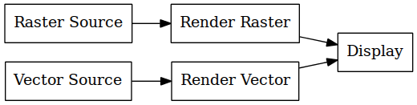

Compositing pipeline is nodal. Rendering is a pull operation where a geographic region is requested on an output and a Node is expected to fulfil the requirements.
An edge therefore consists of an endpoint from which pulled and an input through which ‘damage’ events can be pushed.
The overall effect is something like the following:
